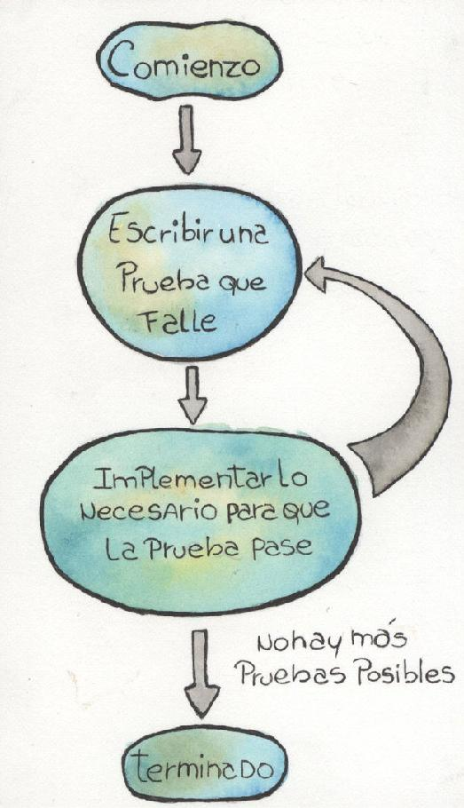
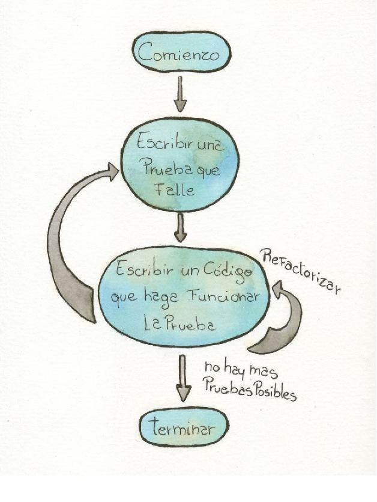
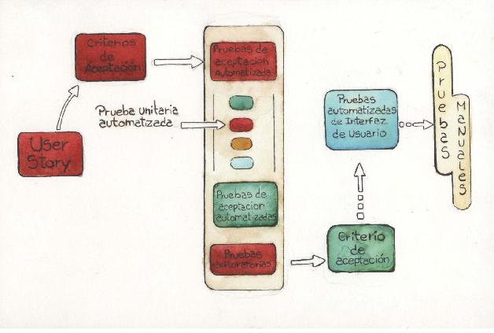

Probar, probar, probar
La mayor parte de los proyectos comienzan pequeños. Por eso nos parece que los podemos gestionar sin preocuparnos demasiado. Unas pocas máquinas en red, con un entorno de desarrollo que permita compilar y ejecutar algunas pruebas unitarias, un repositorio de archivos no muy sofisticado, suelen bastar. Las pruebas de integración integran pocas funcionalidades y módulos, así que pueden hacerse con relativa facilidad y sin demasiadas complicaciones. Y cuando necesitamos desplegar el software en el equipo del cliente, lo hacemos con métodos artesanales.
El problema comienza cuando el sistema que hemos construido se empieza a parecer a las cañas de la Patagonia: lo que había nacido como una pequeña hierba, se ramifica en verdaderos bosques que, con el tiempo, alcanzan varios metros de altura. Con el software pasa algo parecido: cada tanto se le agregan más funcionalidades, a la vez que crece en complejidad, ramificándose en direcciones no previstas al comienzo.
En estos casos, todas las herramientas y técnicas que veníamos usando empiezan a ser insuficientes. Nos empezamos a dar cuenta cuando un despliegue que creíamos que nos iba a llevar media hora, nos conduce a largas sesiones de instalación debido a problemas en el ambiente del cliente. O cuando el último cambio solicitado por este, en vez de hacerlo en la semana que creíamos que nos iba a llevar, consume meses corrigiendo errores que no terminan de aparecer.
Hay muchas técnicas que pueden ayudar en estos casos. Los métodos ágiles han buscado apoyarse en la automatización. En este capítulo nos vamos a centrar en la automatización de las pruebas.
Por qué automatizar
Desde el paleolítico, por lo que sabemos, cuando el ser humano necesitó resolver problemas más complejos, recurrió a técnicas y herramientas que lo ayudaran. Con el paso de los siglos y milenios, también inventó máquinas que lo ayudaran, y no pocos enfoques metodológicos. Cada vez más, las máquinas ayudaron al ser humano a hacer tareas repetitivas o de fuerza bruta.
Con la aparición de las computadoras, las fantasías fueron mucho más allá, y muchos pretendieron que las máquinas pudieran suplir a los humanos en todo, incluso en tareas intelectuales. Esto se ha logrado solo en una mínima parte; sin embargo, cada vez resulta más atractivo usar las capacidades de las computadoras para realizar tareas que se pueden automatizar, logrando mayor velocidad, mayor fuerza de cálculo o incluso para minimizar los problemas causados por algunas características humanas, tales como el cansancio, la pérdida de concentración y la falta de motivación por realizar tareas de las que se presume el resultado.
En este contexto, en el desarrollo de software se viene intentando automatizar desde hace décadas, tal vez por el mismo hecho de trabajar continuamente con computadoras. Al principio, y en línea con las expectativas puestas en las máquinas inteligentes, se pensaba en reemplazar totalmente al programador humano, haciendo una analogía entre los obreros de las industrias manufactureras y los programadores. Debido a que la Inteligencia Artificial no mostraba los resultados esperados, o al menos mostraba que se iba a tardar mucho en alcanzarlos, se buscaron alternativas aparentemente más realistas: ¿no se podrá hacer que las tareas más decididamente humanas, como el análisis y el diseño, las hagan seres humanos, mientras que las que requieren menos trabajo intelectual, como la programación pura, la puedan resolver las máquinas? Ese modo de pensar llevó a las herramientas CASE en los años 1980 y 1990, que suponían que, partiendo de modelos suficientemente detallados del dominio y del diseño, la programación se podría dejar solo a las máquinas.
Hoy sabemos que esta visión ha fracasado, al menos en sus pretensiones de máxima. Tal vez el error fue pensar que la programación era un trabajo mecánico, o que convertirla en un trabajo mecánico sería una ventaja. Pero claramente fue la segunda desilusión, luego de la exagerada apuesta por la Inteligencia Artificial65.
Mientras tanto, muchos programadores descubrieron que había estructuras de código que se repetían y desarrollaron sus propios generadores de código para altas, bajas, modificaciones y consultas a tablas simples de bases de datos. También se crearon herramientas para grabar la ejecución de las pruebas, de modo tal de poder repetirlas después, por ejemplo como pruebas de regresión. En casi todos los casos se buscaba ahorrar tiempo, ya que las máquinas pueden hacer lo mismo que nosotros en un tiempo mucho menor. También se pretendía bajar la tasa de errores que provocaba hacer lo mismo una y otra vez.
En esta forma de automatización es en la que se trabaja hoy. Las otras, al menos por el momento, han evidenciado escaso éxito. Tal vez el tiempo cambie las cosas, pero por el momento estamos aspirando a automatizar algunas tareas que son indudablemente mejor hechas por las máquinas. En esa línea vienen trabajando los métodos ágiles.
Quizá sean las menos ambiciosas de las formas de automatización, pero aún así muchos no las practican.
TDD y automatización
En el capítulo “Empezando por la aceptación” decíamos que la definición de TDD no era solo escribir pruebas antes del código que las mismas deben probar, sino también que dichas pruebas hayan sido automatizadas. Con automatizadas, TDD se refiere a que estén escritas en código o de alguna otra manera que permita ejecutarlas con una computadora.
En TDD, el desarrollador comienza escribiendo una prueba automática que defina un cambio o nueva funcionalidad, luego escribe el código que haga que esa prueba pase (hasta ese momento debía fallar) y luego refactoriza66 para mejorar la calidad del código.
El diagrama de la figura 8.1 muestra el flujo típico de TDD.
Figura 8.1. Ciclo de TDD.

“Ver tabla comparativa en http://unamiradaagil.com/tablas/
También hemos hablado de variantes de TDD, según el tipo de pruebas que están involucradas. Como resumen, la tabla en página anterior muestra una buena clasificación de tipos de TDD y tipos de pruebas (basada en la planteada por Freeman y Pryce en [Freeman 2010]).
Ventajas de la automatización
Las ventajas de automatizar las pruebas son muchas. Entre ellas, destacan:
• Nos independizamos del factor humano, con su carga de subjetividad y variabilidad en el tiempo67.
• Facilita la repetición de las mismas pruebas, con un costo ínfimo comparado con las pruebas realizadas por una persona. Esto es aplicable a regresiones, debugging y errores provenientes del sistema ya en producción.
• Da una red de seguridad de rápida ejecución para correr luego de cada refactorización, para asegurarnos de que el comportamiento observable no ha cambiado.
• Las pruebas evolucionan y crecen junto con el código, de un modo incremental que permite ejecutar conjuntos cada vez mayores a un costo que solo crece linealmente.
Además, en el caso de las pruebas de programador, en código, automatizarlas sirve para:
• Documentar el uso esperado de los módulos.
• Indicar con menor ambigüedad lo que se espera de los módulos.
Qué automatizar
No hay una taxonomía de tipos de pruebas que esté suficientemente aceptada por la comunidad de desarrollo de software. Por eso, vamos a realizar una, que es una simplificación de la clasificación tridimensional de Meszaros [Meszaros 2007]:
• Pruebas de cliente: especifican y validan las expectativas del cliente, además de servir como criterios de aceptación.
• Pruebas de componentes: definen el diseño de alto nivel del sistema y explicitan la intención del arquitecto; a veces se las llama pruebas de integración técnicas.
• Pruebas de unidad: definen el diseño a nivel del código y explicitan la intención del desarrollador.
• Pruebas de usabilidad: buscan determinar si el sistema es cómodo de usar (y aprender a usar) para sus usuarios.
• Pruebas exploratorias: comprueban si el sistema es consistente desde el punto de vista del usuario, si la apariencia es la esperada, etc.
• Pruebas de propiedades: especifican atributos de calidad, definiendo si el sistema es seguro, escalable, robusto, etc.
Lo interesante de la clasificación de Meszaros es que él propone que algunas de las pruebas se pueden y deben automatizar, mientras que las demás deben hacerse en forma manual.
En efecto, las de cliente, las de componentes, las de unidad y las de propiedades, se pueden y conviene automatizarlas. En cambio, las pruebas de usabilidad y las exploratorias, solo es posible hacerlas en forma manual.
Más allá de estas cuestiones, es deseable realizar algunas pruebas en forma manual, sobre todo porque las pruebas realizadas por humanos van a poder detectar los errores de las pruebas automáticas mal construidas: al fin y al cabo, las computadoras solo prueban lo que les decimos que prueben.
Niveles de pruebas y automatización
En los primeros tiempos, TDD se vio como sinónimo de pruebas unitarias automatizadas realizadas antes de escribir el código.
Hay un problema con esta visión de TDD que solo se refiere a pruebas unitarias, porque omite todas las demás cuestiones que pueden validarse con pruebas automáticas, y que de hecho estaban previstas en el libro fundacional de XP [Beck 1999]. Asimismo, las herramientas reflejan este sesgo hacia las pruebas de unidad en sus nombres: JUnit, SUnit, NUnit, etc. Y cuando Beck escribe su libro de TDD [Beck 2002] se basa primordialmente en ejemplos de pruebas unitarias.
Pero todas las variantes de TDD que hemos visto son susceptibles de automatización.
Lo que a lo sumo ocurre es que los objetivos de cada tipo de TDD son distintos. Mientras con UTDD solo escribimos especificaciones y pruebas de las intenciones del desarrollador, con los objetivos de definir el diseño y realizar un control de calidad interno, con ATDD y sus técnicas afines escribimos especificaciones y pruebas de los requerimientos del cliente, buscando definir al sistema desde su comportamiento y permitiendo un control de calidad externo.
Automatizando pruebas de unidad
Como decíamos más arriba, en el marco de TDD se empezó automatizando pruebas unitarias. Por ejemplo, se diseñaban clases y métodos68 a partir de pruebas que definían lo que esas clases y métodos debían hacer. Estas pruebas las realizan los propios desarrolladores, como un paso previo a la escritura de una porción de código. Por lo mismo, son pruebas muy pequeñas y cohesivas, cada una de ellas probando solo un escenario de uso muy restringido.
Para lograr esto, conviene entonces desarrollar pruebas simples, que cada una tenga una sola razón para fallar, que sea independiente de las demás, que sean rápidas de ejecutar y hacerlas independientes de todos los recursos externos (redes, bases de datos, archivos de configuración). Al hacer los componentes fáciles de probar, el acoplamiento entre los mismos tiende a disminuir.
La idea, entonces, es realizar un ciclo iterativo que vaya tomando de a una prueba por vez, logre que el código la haga pasar, refactorizar de ser necesario y luego escribir la prueba siguiente, como se muestra en la figura 8.2.
Esta forma de trabajo exige programadores disciplinados y dispuestos a escribir pruebas o corregir sus presunciones. Beck [Beck 1999] dice que si una prueba resulta difícil de llevar a código, probablemente estemos ante un problema de diseño; sostiene además que el código altamente cohesivo y escasamente acoplado es fácil de probar en forma automática.
Figura 8.2. TDD con pruebas unitarias.

Hay críticos que dicen que las pruebas llevan tiempo y que los programadores deberían dedicarse solo a escribir código, que es lo que mejor hacen, dejando las pruebas a otros. Sin embargo, como se pierde más tiempo corrigiendo errores que en la primera escritura de código, lo cierto es que conviene tener pruebas automatizadas y correrlas frecuentemente.
Con el éxito de UTDD, pronto fue necesario contar con herramientas que facilitaran las tareas del programador. Es así como surgieron los primeros frameworks de pruebas técnicas automatizadas: SUnit para Smalltalk y JUnit para Java. Los mismos fueron las bases para la construcción de las demás herramientas para los demás lenguajes y plataformas, a las que no sorprendentemente se las llamó xUnit de forma genérica.
Por ejemplo, lo que sigue es código JUnit que corresponde a una clase69 de pruebas unitarias para la clase LineaDe3. Esta clase representa una línea de tres casilleros alineados en el juego de Ta-Te-Ti.
public class PruebasLineaDe3 {
private LineaDe3 linea;
private celda0, celda1, celda2;
private String descripcion = “línea diagonal inversa”;
private Juego juego = new Juego (TipoJuego.JugadorVsJugador); private JugadorHumano jugadorX = new JugadorHumano (‘X’, juego); private JugadorHumano jugadorO = new JugadorHumano (‘O’, juego);
@Test
public void estaCompletaDeberiaSerVerdaderoCuandoTresCeldasTienenElMismoJugador ( ) {
Celda[] celdas = { new Celda (2, 0, jugadorX), new Celda (1, 1, jugadorX), new Celda (0, 2, jugadorX) };
linea = new LineaDe3( celdas, descripcion ); Assert.assertTrue( linea.estaCompleta() );
}
@Test
public void estaCompletaDeberiaSerFalsoCuandoUnaCeldaNoEstaOcupada ( ) {
Celda[] celdas = { new Celda (2, 0, jugadorX), new Celda (1, 1, null), new Celda (0, 2, jugadorX) };
linea = new LineaDe3( celdas, descripcion ); Assert.assertFalse( linea.estaCompleta() );
}
@Test
public void hayTaTeTiDeberiaSerFalsoCuandoLasTresCeldasNoTienenElMismoJugador ( ) {
Celda[] celdas = { new Celda (2, 0, jugadorX), new Celda (1, 1, jugadorO), new Celda (0, 2, jugadorX) };
linea = new LineaDe3( celdas, descripcion ); Assert.assertFalse( linea.hayTaTeTi() );
}
@Test
public void hayTaTeTiDeberiaSerVerdaderoCuandoTresCeldasTienenElMismoJugador ( ) {
Celda[] celdas = { new Celda (2, 0, jugadorX), new Celda (1, 1, jugadorX), new Celda (0, 2, jugadorX) };
linea = new LineaDe3( celdas, descripcion ); Assert.assertTrue( linea.hayTaTeTi() );
}
@Test publicvoidproximaJugadaPodriaSerTaTeTiDeJugadorDeberiaSerVerdaderoCuendoElMismoJugadorOcupaTresCeldas(){
Celda[] celdas = { new Celda (2, 0, jugadorX), new Celda (1, 1, jugadorX), new Celda (0, 2, null) };
linea = new LineaDe3( celdas, descripcion );
Assert.assertTrue( linea.proximaJugadaPodriaSerTaTeTiDe(jugadorX) ); Assert.assertFalse( linea.proximaJugadaPodriaSerTaTeTiDe(jugadorO) );
}
@Test publicvoidceldaFaltanteParaTaTeTiDeberiaSerLaPrimeraCuandoLasOtrasDosEstenOcupadasPorElMismoJugador(){
Celda primera = new Celda (0, 2, null);
Celda[] celdas = { primera, new Celda (1, 1, jugadorX), new Celda (0, 2, jugadorX) };
linea = new LineaDe3( celdas, descripcion );
Assert.assertSame( primera, linea.celdaFaltanteParaTaTeTi(jugadorX) );
Assert.assertNotSame( new Celda (1, 1, jugadorX), linea.celdaFaltanteParaTaTeTi(jugadorX) ); Assert.assertNotSame( new Celda (0, 2, jugadorX), linea.celdaFaltanteParaTaTeTi(jugadorX) );
}
@Test
public void celdaFaltanteParaTaTeTiDeberiaSerLaUltimaCuandoLasOtrasDosEstenOcupadasPorElMismoJugador ( ) { Celda ultima = new Celda (0, 2, null);
Celda[] celdas = { new Celda (2, 0, jugadorX), new Celda (1, 1, jugadorX), ultima };
linea = new LineaDe3( celdas, descripcion );
Assert.assertSame( ultima, linea.celdaFaltanteParaTaTeTi(jugadorX) );
Assert.assertNotSame( new Celda (2, 0, jugadorX), linea.celdaFaltanteParaTaTeTi(jugadorX) ); Assert.assertNotSame( new Celda (1, 1, jugadorX), linea.celdaFaltanteParaTaTeTi(jugadorX) );
Decíamos que la primera falla conceptual de hacer UTDD es que se escribían pruebas para pequeñas porciones de código aisladas, típicamente clases en el paradigma de objetos. Como un sistema es un conjunto de módulos interactuando, esto ya era problemático. Por lo tanto, necesitamos escribir pruebas que tengan en cuenta las relaciones entre distintos objetos.
Como siempre que hablamos de varios módulos caemos en el problema de qué desarrollar primero y cómo probar las interacciones con módulos aún no implementados. La idea más simple es la de construir módulos ficticios o stubs, y fue la primera que se encaró.
Así se pueden construir módulos ficticios que devuelvan valores fijos o tengan un comportamiento limitado, solo para probar.
Al avanzar en estos tipos de pruebas se fue notando la necesidad de distintos tipos de módulos70 ficticios, que son los que Meszaros [Meszaros 2007] llama Dobles de prueba71, y que clasifica así72:
• Dummy Object (literalmente, “objeto ficticio”): son aquellos que deben generarse para probar una funcionalidad, pero que no se usan en la prueba. Por ejemplo, cuando un método necesita un parámetro, pero el valor del mismo no se usa en la prueba.
• Test Stub (literalmente, “muñón”): son los que reemplazan a módulos reales del sistema, generalmente para generar entradas de datos o impulsar funcionalidades del módulo que está siendo probado. Por ejemplo, módulos que invocan mensajes sobre el módulo sometido a prueba.
• Test Spy (literalmente, “espía”): se usan para verificar los mensajes que envía el módulo que se está probando, una vez corrida la prueba.
• Mock Object (literalmente, “objeto de imitación”): son módulos que reemplazan a los reales del sistema para observar los mensajes enviados a otros módulos.
• Fake Object (literalmente, “objeto falso”): son módulos que reemplazan a otros con implementaciones alternativas. Por ejemplo, un reemplazo de una base de datos en disco por otra en memoria por razones de desempeño.
Notemos que con cada una de estas soluciones se busca separar el módulo que se está probando de los demás, disminuyendo las dependencias. De alguna manera, lo que se está buscando es mantener las pruebas de integración como pruebas unitarias, al limitar la prueba a solo un módulo en particular.
Por lo tanto, no estamos ante verdaderas pruebas de integración, aunque estemos más cerca. De allí que algunos especialistas (por ejemplo, Freeman y Pryce [Freeman 2010] presentan lo que denominan NDD) recomendaron estrategias para ir reemplazando los dobles por módulos reales a medida que se iban generando. Y así llegaríamos a la prueba de integración mediante la construcción incremental a partir de pruebas unitarias.
Muchos de estos dobles no se usan solo porque haya módulos aún no implementados. A veces los usamos porque es muy lento o muy complicado probar usando una base de datos o un sistema externo. Por lo tanto, estas técnicas sirven también para probar desacoplando interacciones.
Por supuesto, a medida que surgían estas técnicas, fueron construyéndose frameworks que facilitaban la generación y ejecución de pruebas que las incluyeran. Entre ellos, y solo a modo de ejemplo, podemos nombrar a jMock73, mockito74 e EasyMock75, para Java; NMock76, moq77 y Rhino Mocks78 para .NET. En otros lenguajes incluso se pueden generar objetos ficticios desde herramientas más abarcativas, como ocurre en el caso de Ruby, con RSpec.79
Automatizando pruebas de aceptación
En el capítulo “Empezando por la aceptación”, vimos las técnicas basadas en pruebas de aceptación, denominadas ATDD, BDD y STDD, y sus ventajas. Todas ellas, que son lo suficientemente parecidas para que las consideremos equivalentes, admiten ser automatizadas.
En la práctica completa de ATDD, se expresan requerimientos como ejemplos concretos antes del desarrollo de un requerimiento, se automatizan esos ejemplos para luego escribir el código. A medida que se va construyendo el sistema, se van corriendo las pruebas unitarias, de integración y de aceptación, todas ellas automatizadas.
De esta manera, las pruebas de aceptación de una user story se convierten en las condiciones de satisfacción del mismo, y los criterios de aceptación, al estar automatizados, se convierten en especificaciones ejecutables.
Por lo tanto, así como UTDD pretende ser una técnica de diseño detallado, BDD y ATDD se presentan como técnicas de diseño basado en dominio. En BDD y ATDD se pone el foco en que el software se construye para dar valor al negocio, y no debido a cuestiones técnicas, y en esto están muy alineadas con las premisas básicas de los métodos ágiles.
En muchos casos, para automatizar pruebas de aceptación, se trabaja con formularios en forma de tabla, que suelen ser mejor comprendidos por no informáticos, y de esa manera se consigue una mayor participación de personas no especializadas.
Las tablas resultan una notación usual para representar entradas y salidas calculables, aunque son definitivamente inadecuadas para representar flujos de tareas, y requieren bastante trabajo de programación para generar pruebas automáticas.
También se utilizan otros formatos, como texto anotado con las palabras “Dado, Cuando, Entonces”, que luego permitan generar código.
Por ejemplo, lo que sigue es una especificación de un escenario del juego de Ta-Te-Ti en Gherkin, uno de los lenguajes más populares para escribir especificaciones de pruebas de aceptación.
Característica: Ta-Te-Ti Jugador contra PC
Para que el juego sirva para un jugador solo
Como cliente
Deseo que la PC pueda jugar con inteligencia contra el jugador
Escenario: Bloqueo de posible Ta-Te-Ti por PC
Dado Jugador tiene ocupada una celda en una línea
Y Hay dos celdas libre en la línea
Y Jugador está en su turno
Cuando Jugador coloca una X en otra celda de la línea
Entonces PC debe colocar una O en la celda libre de la línea
Lo que se busca con este texto anotado es una solución intermedia entre el texto libre y las especificaciones en código.
Respecto de las especificaciones en código, que también son posibles, su obvia ventaja radica en la facilidad de generación de pruebas automáticas, a veces incluso a un costo nulo. Sin embargo, son las menos adecuadas como herramientas de comunicación y provocan una resistencia casi instintiva de los roles no técnicos.
Últimamente ha ido ganando también habitualidad el uso de lenguajes específicos de dominio (DSL, por su sigla en inglés). Si bien en apariencia son la alternativa más conveniente, presentan como dificultad la falta de lenguajes para gran cantidad de tipos de dominio.
Automatizando pruebas de interacción
Las primeras pruebas en ser automatizadas fueron las de interacción con el usuario. Ya desde la década de 1980 hay herramientas que permiten grabar una prueba realizada a mano por un tester, para después ejecutarla en forma repetitiva, sea para chequear la resolución de un problema o para hacer pruebas de regresión.
Todo esto es anterior a TDD y a los métodos ágiles. Ahora bien, esta manera de trabajar muestra un conflicto con la filosofía de TDD: la propia noción de construir algo para luego grabar su ejecución no se lleva bien con la práctica de escribir antes las pruebas, premisa básica de TDD.
Encima, ha habido muchas críticas a la automatización de pruebas a través de la interfaz de usuario:
• Mugridge y Cunningham [Mugridge 2005] dicen que no conviene hacerlas, porque la interfaz de usuario es muy cambiante y las pruebas se desactualizan con mucha frecuencia.
• North [North 2006], Adzic [Adzic 2009], Freeman y Pryce [Freeman 2010] ponen énfasis en separar el qué del cómo, diciendo que el cómo es menos relevante y más cambiante, y por lo tanto debe ser un tema a discutir como parte de las actividades de implementación.
• Otros han destacado que las pruebas de interfaz de usuario suelen ser muy lentas de ejecutarse.
• También hay cuestiones que sólo las puede probar satisfactoriamente un usuario humano. Por ejemplo, la ubicación de los botones, los colores, la consistencia de la aplicación en su totalidad, no son fáciles de automatizar. Y cada cambio en la interfaz de usuario requiere al menos un recorrido por la misma.
Incluso Meszaros [Meszaros 2007] ha destacado los problemas que él denomina “de la prueba frágil”, que consisten en:
• Sensibilidad al comportamiento: los cambios de comportamiento provocan cambios importantes en la interfaz de usuario, que hacen que las pruebas de interacción dejen de funcionar.
• Sensibilidad a la interfaz: aun cambios pequeños a la interfaz de usuario suelen provocar que las pruebas dejen de correr y deban ser cambiadas.
• Sensibilidad a los datos: cuando hay cambios en los datos que se usan para correr la aplicación, los resultados que esta arroje van a cambiar, lo que hace que haya que generar datos especiales para probar.
• Sensibilidad al contexto: igual que con los datos, las pruebas pueden ser sensibles a cambios en dispositivos externos a la aplicación.
Esta fragilidad, más el tema ya expuesto de la lentitud de las pruebas a través de la interfaz de usuario son las que más quejas han provocado.
Existen muchos casos de empresas que apuestan por automatizar pruebas de interacción. Para hacerlo con algo de éxito, es indispensable dedicar los recursos adecuados. Hemos visto en muchos proyectos equipos enteros de 5, 8 o más programadores dedicados exclusivamente a la programación y mantenimiento de pruebas de comportamiento automatizadas.
En estos proyectos, el equipo de programadores no especifica las pruebas (esto lo hacen analistas de calidad), sino que se dedican solo a las tareas técnicas de programación y mantenimiento.
Con el tiempo, es usual que el mayor énfasis sea en el mantenimiento del conjunto de pruebas, dado que por su naturaleza estas son muy frágiles y tienen a dar muchos falsos negativos.
En proyectos complejos, es usual que se utilice o arme un framework para trabajar ordenadamente, en especial en las aplicaciones web modernas, donde el comportamiento es muy complejo.
En una ocasión, una empresa contaba con dos sistemas de CRM diferentes, uno para el mercado masivo y otro para grandes clientes. Se hizo una unificación de ambos, en forma progresiva, hasta lograr una sola base de datos e interfaz, todo sin interrumpir el funcionamiento ni hacer cambios repentinos para el usuario. Se consideró crítico para el éxito de este proyecto contar con un conjunto de pruebas de interacción. En este caso había 8 programadores trabajando exclusivamente en desarrollo y mantenimiento de pruebas, que en ese proyecto llevaban el título de Ingenieros de Pruebas.
P. S.
Pero esto está dejando de lado algo fundamental: el valor para el negocio, que se logra mediante el comportamiento, se exhibe y se materializa, también en una proporción muy mayoritaria de los casos, a través de la interfaz de usuario.
Por añadidura, la mayoría de los usuarios reales solo consideran que la aplicación les sirve cuando la ven a través de su interfaz de usuario. Ergo, si cada iteración debe terminar con un entregable potencial, solo debería considerarse terminada si lo que se entrega incluye la interfaz de usuario con su interacción y navegación probadas.
En definitiva, no se debería dejar sin especificar con pruebas la interfaz de usuario.
Para llevar la idea de TDD a este tipo de pruebas, se han hecho intentos de construir pruebas a partir de maquetas de interfaz de usuario y modelos, tales como en los trabajos realizados en el LIFIA80 [Burella 2010]. En este sentido también destaca el trabajo de Meszaros y otros [Meszaros 2003].
No obstante, todavía falta, para considerar a TDD una técnica completa, que las pruebas de interacción sobre la interfaz de usuario puedan integrarse a las pruebas de comportamiento, a nivel de modelo de negocio.
Esto es, si tenemos una aplicación en capas, habitualmente separamos la lógica de la aplicación, o modelo de dominio, de la interfaz de usuario. El modelo es lo que suele ser más fácil de someter a pruebas automáticas de aceptación.
Sin embargo, hay algo que no se suele tener en cuenta: la interfaz de usuario también tiene comportamiento, a veces complejo, al punto que fue uno de los primeros usos de la programación orientada a objetos. Por eso mismo es que ha habido intentos de usar BDD para desarrollar interfaces web. El más destacado es la utilización del patrón denominado Page Object [Stewart 2011].
De todas maneras, aun cuando no haya una integración entre ambos tipos de pruebas, hacerlas por separado es un gran avance. De hecho, probar la interfaz de usuario sabiendo de antemano que el comportamiento está funcionando bien y ha sido probado es más tranquilizante, ya que seguramente nos vamos a encontrar con menos problemas en la prueba a través de la interfaz de usuario. Por ejemplo, hay herramientas, como Selenium, que sirven para probar aplicaciones web a través de esta interfaz.
Por supuesto, luego de las pruebas automatizadas de aceptación, hay que realizar pruebas a mano, las que hemos llamado exploratorias, que garantizan aspectos de calidad que solo el criterio humano puede discernir.
Formas de automatizar
Ahora bien, las maneras de automatizar no son siempre las mismas.
En primer lugar, depende de los medios que utilicemos para la interacción entre las pruebas y la aplicación. Una aplicación construida en capas admite que las pruebas se hagan usando a las distintas capas como interfaz del sistema a probar. Simplificando, hay dos maneras principales de interactuar con la aplicación a probar:
• Mediante la interfaz de usuario, simulando un usuario humano.
• Mediante una interfaz programática (API81).
En el primero, a veces son la única forma de probar en aquellos casos en que la API del programa no prevé acceso a toda la funcionalidad desde afuera.
La otra cuestión es la manera en que materializamos las pruebas:
• Si se construyen escribiendo código (los guiones o scripts, a la manera del patrón Scripted Test [Meszaros 2007]).
• Si se construyen grabando pruebas corridas ad hoc por un tester (según el patrón Recorded Test [Meszaros 2007]).
Si combinamos ambas clasificaciones podemos obtener cuatro posibilidades.
Las herramientas del tipo xUnit trabajan con pruebas basadas en guiones que se comunican a través de la API del sistema.
En el otro extremo, los robots que simulan interacción de usuarios, generan pruebas grabadas que se corren usando la interfaz de usuario.
Pero hay otras dos situaciones intermedias. Por ejemplo, a través de la API del sistema se pueden utilizar herramientas que graban interacciones con el sistema para correrlas en forma repetitiva, a través de una capa de servicios. Y a través de la interfaz de usuario podemos también hacer pruebas basadas en guiones.
Herramientas
Cualquier lista de herramientas que hagamos va a resultar forzosamente incompleta, y se desactualizará día a día. Sin embargo, resulta ilustrativo ver algunas de las más relevantes en el momento en que estamos escribiendo estas líneas.
“Ver tabla comparativa en http://unamiradaagil.com/tablas/”
El ciclo de desarrollo automatizado
En definitiva, si automatizamos todos los tipos de pruebas, estaríamos ante un ciclo de desarrollo como el de la figura 8.3.
Figura 8.3. Ciclo de desarrollo automatizado.

Este ciclo de desarrollo se puede enriquecer aún más, incorporándole más actividades a realizar en forma automática, como veremos en el capítulo “Integrando el producto al instante”.
En resumen
Siempre es bueno que las computadoras nos ayuden en tareas en las que tienen ventajas naturales. Por eso, si una tarea es repetitiva, necesita resultados iguales para iguales estímulos independientemente de otros factores, y requiere ser ejecutada lo más rápido posible, debe automatizarse.
Muchas pruebas caen dentro de esta categorización, y por eso la planteamos. Puede que haya diferentes opiniones de hasta dónde automatizar, pero claramente hay situaciones en que la automatización no debería ser una opción.
Además, existen muchas herramientas que facilitan estas tareas, además de varios enfoques metodológicos que las respaldan.
Para ser útiles, conviene que corran rápidamente, que sean independientes unas de otras y que sirvan como soporte ante regresiones.
En el capítulo “Integrando el producto al instante”, trataremos otras automatizaciones al tratar los temas de integración y entrega continua.
65 Con esto no estamos descalificando a los usos que tiene y tendrá la Inteligencia Artificial. Solo estamos diciendo que lo que se esperaba de la misma es más que lo que luego se logró.
66 Refactorización, como se explica en el capítulo “Arquitectura y diseño en emergencia”, es una práctica del desarrollo ágil de software que consiste en mejorar la calidad del código para facilitar su mantenimiento, pero sin alterar el comportamiento observable del mismo.
67 A lo largo del día, los desarrolladores y testers cambian su nivel de atención. Incluso en distintas etapas de un proyecto, las personas están más o menos motivadas y alertas a problemas. Lo que se busca con la automatización es evitar que la evaluación sobre la calidad del producto quede en manos de personas cansadas o apresuradas.
68 Recordemos que TDD nació como una manera de hacer diseño orientado a objetos.
69 No se muestra la clase completa, ya que solo se pretende mostrar el estilo de escritura de pruebas en código. Por supuesto, las pruebas completas deben ser mucho más abundantes.
70 Hablamos de módulos para mantener la neutralidad respecto del paradigma. Meszaros trabaja suponiendo el paradigma de objetos, y por lo tanto habla de objetos y clases, no de módulos en forma genérica.
71 La expresión en inglés que usa Meszaros es “Test Doubles”.
72 Si bien Meszaros hace una distinción muy minuciosa entre todos los tipos de dobles, no entraremos en detalles, teniendo en cuenta que muchas personas definen en forma ligeramente diferente cada tipo, haciendo que las distinciones entre un tipo y otro no siempre estén claras.
74 https://code.google.com/p/mockito/
77 https://code.google.com/p/moq/
80 Laboratorio de Investigación y Formación en Informática Avanzada, de la Universidad Nacional de La Plata.
81 “Application Programming Interface” o “interfaz de programación de la aplicación”.